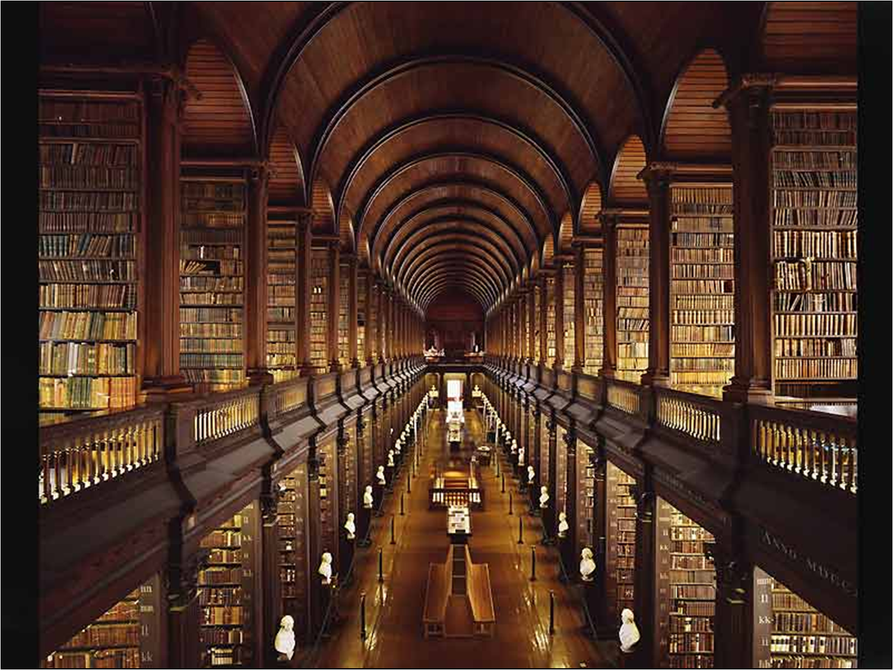

A biblioteca da meia noite é um lugar mágico onde os livros vivem e contam histórias.
A Biblioteca da meia noite oferece uma ampla variedade de produtos literários para satisfazer os desejos mais ardentes dos aventureiros da imaginação. Se você prefere mergulhar nas profundezas da narração oral, temos audio-livros encantados que transportam os ouvintes para mundos distantes com vozes cativantes e efeitos sonoros fascinantes. Para os aficionados pela tecnologia, oferecemos uma vasta seleção de livros digitais, cujas páginas brilham com letras mágicas e ilustrações que saltam dos dispositivos eletrônicos. E, é claro, para aqueles que apreciam a textura e o cheiro de um livro físico, temos estantes abarrotadas de obras antigas e contemporâneas, prontas para serem folheadas e desvendadas por mãos ávidas por conhecimento.